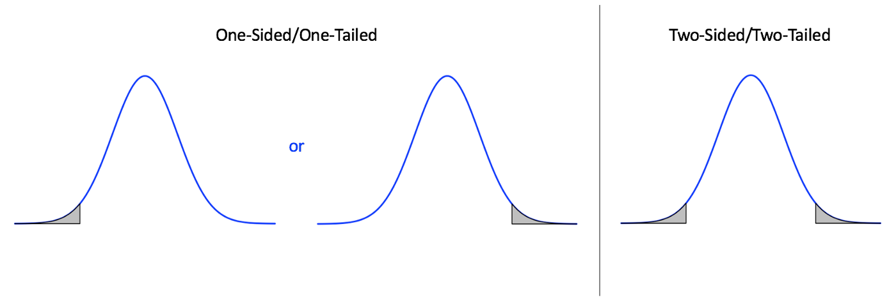

Hypothesis Testing
Hypothesis testing is the process of testing, with statistical rigor, some suggested assumption about an observation. This process follows the the process of:
- 1) Making some testable assumption
- 2) Collecting data to use as evidence of said assumption
- 3) Accepting or rejecting the assumption at hand
We will denote here the difference between a biological hypothesis and a statistical hypothesis. It's important to choose our language carefully and keep in mind the context. In the context of a statistical test, a population is not a biological population, but a population as we defined it in the probability section: the set of all units a random process can pick.
Null Hypothesis Testing
This is the simplest form of hypothesis testing, and it revolves around the idea of a null hypothesis, which is held as the accepted truth until we can amass sufficient support to show that the null hypothesis is not necessarily true. The null hypothesis states no statistical relationship and significance exists between two sets of observed data. The alternate hypothesis does suggest a statistical relationship between the sets of data, and can optionally also suggest a direction of magnitude. That is, the alternate hypothesis can suggest only a magnitude (e.g. X variable co-varies with Y) or a magnitude and a direction (e.g. X co-varies positively with Y).
Once we have a stated alternate and null hypothesis, we would perform a statistical test to determine whether or not we reject the null hypothesis. Importantly, note that we can NEVER accept the alternate hypothesis. We can ONLY reject or fail to reject the null hypothesis. Typically we would use a significance value to determine whether or not we can reject the null hypothesis.
The way that we state our hypothesis will determine what type of statistical test we use to determine whether or not we reject this null hypothesis. Among the types of tests we can perform, in the context of a null hypothesis test, we can ask about (among other things):
- 1) Association/Co-variation between variables
- 2) Differences between group means
Let's use an example to discuss this. Say we are interested in the size of fiddler crabs. We could formulate a hypothesis test that falls into each of these categories. For example:
- 1) We could decide we think that size covaries with some other variable, say, latitude. If we wanted to test Bergmann's Rule, we could form a null hypothesis that says that size does not co-vary with latitude, and an alternate hypothesis that says not only do we think size co-varies with lattitude, but that it co-varies positively.
- 2) If the crabs are from multiple sites, we could say that, between two sites of interest, we might believe there to be a size difference. Here, we would then state as our null hypothesis that there is no difference in the mean between the group of population at site A) and site B), but our alternate hypothesis would say that there is in fact a statistically significant difference between the group means at site A) and B). See how to do this in R.
One-sided vs. Two-sided Tests
It's important initially when we think about how we're performing our null hypothesis test, to think about if we want our test to be one sided or two sided. (Note that we use the term one-sided, but it's also common to refer to this as a tail, so some will refer to these as one vs. two-sided tests.) In a one-sided test, we have an alternative hypothesis that includes values for the population parameter exclusively for one side of the value stated in the null. In other words, we are explicitly testing if the value is greater than or separately less than the null value. For two sided tests, we are not constraining the direction, and the alternative values for the population parameter can be on either side of thye null. This is easily remembered by thinking of these in the form of distrubtions:
Importantly, we must always choose our alternative hypothesis for a one-sided test before looking at our data, because in addition to this being standard and best practice, we should not use the data to influence the direction we pick away from the null value.
Statistical Signficance Testing
Consider our third example regarding crabs from multiple sites. If our alternate hypothesis is that there is a difference in size between the two sites, perhaps we sampled some crabs and discover that there is in fact a difference. To illustrate this I'll fabricate an example. Imagine that there is some site A has an average size of 25.4 and some site B has an average size of 26.1. What do we do with this information? Can we reject our null hypothesis? Well, first, we'll have to quantify how certain we are that what we're seeing is due to to chance or not. That is, what is the probability we observe this difference due to chance alone?
Typically, we want to think about this conundrum as being based around the probability that we see the data we do IF the null hypothesis is true.
What that means for us, is we need to calculate the probability that this size difference is a fluke. Why is this important? Well, we need to keep in mind the two types of errors:
- 1) A false positive (type I) - rejecting the null hypothesis, when in fact the null hypothesis is true
- 2) A false negative (type II) - failing to reject the null hypothesis when the null hypothesis is false
A false positive error means that we are likely attributing some correlation or causation when in fact none exists, and a false negative means that there is in fact correlation or causation we could ascribe to our process of interest that we have missed. The nature of significance testing means that it's impossible to be 100% sure that we are not committing a significance error, but we can think about it as an attempt to reduce the probability that the data we have observed are due to chance if the null hypothesis is true. We refer to this probability value as the , and it is a value that bedevils students and researchers of all experience levels.
Statistical Significance
So we've performed our test and we now have a value () for the probability that the data we have observed are due to chance if the null hypothesis is true. Now what?? Can we reject our null hypothesis? It is standard practice in statistics and biology particularly, to use a probability of 0.05 as the arbitrary threshold for deciding if a null hypothesis can be rejected. If then common practice dictates we can officially reject the null hypothesis. But wait! You might be thinking "0.05?? What's so special about that number? Does it have some magic power? Could we use another value? Say 0.01? 0.01? 0.0000001?" All excellent questions!!! These are conundrums that plague research, and that active researchers in statistics and domain sciences debate about constantly. The interested reader can pursue ideas about possible alternatives to but they will not be discussed here.
A Sidenote on the Danger of Thresholds
The many discussions about what is to be done about the arbitrary cut-off could fill libraries. Suffice it to say that there is no easy alternative or it would have been adopted. What the present author would like to stress is not that the is evil or even unuseful. In fact it can be quite useful. The problem comes when the researcher views the threshold value (i.e. ) as a distinct line in the sand between effects being "real" or "zero". It is simply not true that a of 0.07 indicates there is no chance that the null hypothesis may be incorrect, and to treat it as such is to misunderstand the purpose of significance testing. We are never testing if our hypotheses are "right" or "wrong" we are only trying to quantify if the null hypothesis we've . This is not simply a semantic difference but a very real difference of interpretation and discretion that I hope all reading this will take into their usage of p-values and statistical significance testing.
We may now wonder - how do we get this elusive then? Well, this brings us back to our discussion of statistical tests. The way we calculate our p-value depends on the statistical test we use. What statistical test do we use? Well, that depends on how we've formulated our hypotheses (i.e. recall the three ways we asked question about crab size above).
The EEB R Manual is the work of researchers at the University of the Toronto
and intended as a purely educational resource. It holds no official
association with the R Foundation. It should not be taken as an
authority on R best practices.
When using this resource,
This content is reviewed regularly for errors and to make improvements, if you see an error and want to help us make this better, see the Contact Page